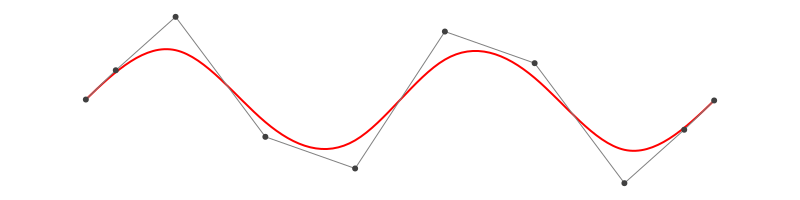

BasicBSpline.jl
Summary
This package provides basic (mathematical) operations for B-spline.
- B-spline basis function
- Some operations for knot vector
- B-spline manifold (includes curve, surface and solid)
- Refinement for B-spline manifold
- Fitting control points for B-spline manifold
Comparison to other julia packages for B-spline
- Interpolations.jl
Currently this package's support is best for B-splines and also supports irregular grids.
- But seems like no method for B-spline manifold.
- ApproXD.jl
- Wrapper for the dierckx Fortran library.
- Its functions are similar to Interpolations.jl.
- Dierckx.jl
- Only 1-d or 2-d B-spline manifold are supported.
- 5 or less degree of polynomial are supported.
- BasicBSpline.jl (this package)
- Any degree of polynomial are supported.
- Any dimension are supported.
- Fast implementation for lower degree (≤ 3) and dimension (≤ 3).
- Refinement algorithm for B-spline manifold.
- Fitting algorithm by least squares.
Installation
Install this package
(pkg)> add https://github.com/hyrodium/BasicBSpline.jlTo export graphics, use ExportNURBS.jl.
(pkg)> add https://github.com/hyrodium/ExportNURBS.jlExample
B-spline function
using BasicBSpline
using Plots
gr()
k = Knots([0.00,1.50,2.50,5.50,8.00,9.00,9.50,10.0])
P0 = BSplineSpace(0,k) # 0th degree piecewise polynomial space
P1 = BSplineSpace(1,k) # 1st degree piecewise polynomial space
P2 = BSplineSpace(2,k) # 2nd degree piecewise polynomial space
P3 = BSplineSpace(3,k) # 3rd degree piecewise polynomial space
plot(
plot([t->bsplinebasis(i,P0,t) for i in 1:dim(P0)], 0, 10, ylims=(0,1), legend=false),
plot([t->bsplinebasis(i,P1,t) for i in 1:dim(P1)], 0, 10, ylims=(0,1), legend=false),
plot([t->bsplinebasis(i,P2,t) for i in 1:dim(P2)], 0, 10, ylims=(0,1), legend=false),
plot([t->bsplinebasis(i,P3,t) for i in 1:dim(P3)], 0, 10, ylims=(0,1), legend=false),
layout=(2,2),
)
Try interactive graph with Desmos graphing calculator!
B-spline manifold
using BasicBSpline
using ExportNURBS
p = 2 # degree of polynomial
k = Knots(1:8) # knot vector
P = BSplineSpace(p,k) # B-spline space
rand_a = [rand(2) for i in 1:dim(P), j in 1:dim(P)]
a = [[2*i-6.5,2*j-6.5] for i in 1:dim(P), j in 1:dim(P)] + rand_a # random generated control points
M = BSplineManifold([P,P],a) # Define B-spline manifold
save_png("docs/src/img/2dim.png", M) # save image
Refinement
k₊=[Knots(3.3,4.2),Knots(3.8,3.2,5.3)] # additional knots
M′ = refinement(M,k₊=k₊) # refinement of B-spline manifold
save_png("docs/src/img/2dim_refinement.png", M′) # save image
Note that this shape and the last shape are identical.
Fitting B-spline manifold
Try on Desmos graphing graphing calculator!
p1 = 2
p2 = 2
k1 = Knots(-10:10)+p1*Knots(-10,10)
k2 = Knots(-10:10)+p2*Knots(-10,10)
P1 = FastBSplineSpace(p1, k1)
P2 = FastBSplineSpace(p2, k2)
f(u) = [2u[1]+sin(u[1])+cos(u[2])+u[2]/2, 3u[2]+sin(u[2])+sin(u[1])/2+u[1]^2/6]/5
a = fittingcontrolpoints(f, [P1,P2])
M = BSplineManifold([P1,P2],a)
save_png("docs/src/img/fitting.png", M, unitlength=50, up=10, down=-10, left=-10, right=10)

If the knots span is too coarse, the approximation will be coarse.
p1 = 2
p2 = 2
k1 = Knots(-10:5:10)+p1*Knots(-10,10)
k2 = Knots(-10:5:10)+p2*Knots(-10,10)
P1 = FastBSplineSpace(p1, k1)
P2 = FastBSplineSpace(p2, k2)
f(u) = [2u[1]+sin(u[1])+cos(u[2])+u[2]/2, 3u[2]+sin(u[2])+sin(u[1])/2+u[1]^2/6]/5
a = fittingcontrolpoints(f, [P1,P2])
M = BSplineManifold([P1,P2],a)
save_png("docs/src/img/fitting_coarse.png", M, unitlength=50, up=10, down=-10, left=-10, right=10)
Draw smooth vector graphics
p = 3
k = Knots(range(-2π,2π,length=8))+p*Knots(-2π,2π)
P = FastBSplineSpace(p, k)
f(u) = [u[1],sin(u[1])]
a = fittingcontrolpoints(f, [P])
M = BSplineManifold([P],a)
save_svg("docs/src/img/sine_curve.svg", M, unitlength=50, up=2, down=-2, left=-8, right=8)
This feature is useful when you use vector graphics editor.